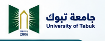

INTERACTIVE FACILITY MAP
المخطط التشغيلي التفاعلي
اضغط على أي معمل لعرض الأجهزة والمتطلبات وطريقة التشغيل13معملLaboratories
86جهازInstruments
24/7دعم فنيTechnical Support
7أنظمة بنية تحتيةCore Utilities

Central Laboratory
للأبحاث والخدمات التحليلية · For Research and Analytical Services